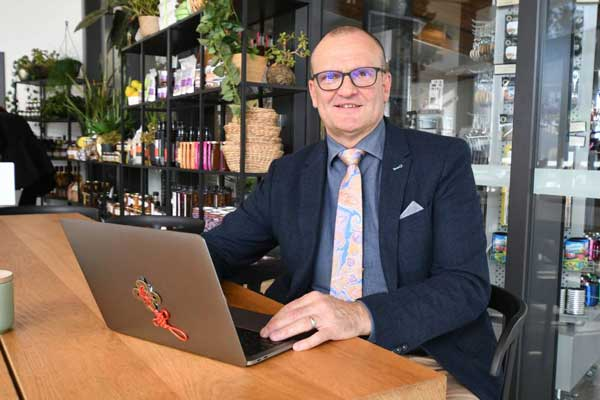

W pełni oczyściłam organizm, polecam każdemu!
"Od dobrych 10 lat zmagam się z bólami głowy, brzucha i sennością. Odwiedziłam koło 15 lekarzy specjalistów, którzy mieli kłopot z odpowiednią diagnozą. Były podejrzenia, że to przez problemy z tarczycą, usłyszałam nawet od jednego z lekarzy, że to prawdopodobnie cukrzyca! Kosztowało mnie to dużo stresu, ponieważ leki które dostawałam, nie pomagały! W końcu koleżanka namówiła mnie na konsultację dietetyczną, i wyszło że mam całkowicie zakwaszony ogranizm. Specjalistka poleciła mi i po dwóch miesiącach kuracji wszystkie dolegliwości minęły! Ba, nawet zrzuciłam 3kg :)"
Witam,
Nazywam się Nicolas Gutenbaum i jestem specjalistą do spraw żywienia. Od 25 lat pomagam ludziom z problemami gastrycznymi. Prowadzę własne badania, na temat wzdęć, gromadzeniem wody oraz zaburzeń trawienia.
Większość badań, pokazała mi, że odpowiedzialne za te dolegliwości jest zakwaszenie organizmu. Przez to wątroba jest bardzo mocno eksplatowana, dlatego odczuwamy ciągłe zmęczenie i kwas w żołądku.
Jeżeli przychodzi do mnie osoba z takimi objawiami, od razu mogę zalecić kompleksowy detox organizmu. Przez lata gromadzi się w nas masa metali ciężkich i bakterii, które negatywnie wpływają na cały nasz organizm.
Skąd to się bierze? To proste: jedzenie nie umytych warzyw i owoców, picie kawy na czczo (zakwasza organizm), żyjąc w mieście i oddychając spalinami, dostarczamy śmiertelnej dawki metali ciężkich, oraz jedząc przetworzone produkty z marketów...
Chętnie wstaje z łóżka!
Z reguły wstaje z łóka o godzinie 8.00. Do tej pory ustwiałam budzik na 7:00 i przez godzinę próbowałam się dobudzić! Miałam wrażenie, że powieki ważą tone! Nie miałam siły i chęci, aby rozpoczynać kolejny dzień. Po kuracji wszystko się zmieniło! Wstaję przed budzikiem i mam pełno energii! Warto!
Krystyna P., 38 lat
Prawdę mówiąc, w dzisiejszym świecie, jest niemożliwe uniknięcie kontaktu z tymi rzeczami. Jak bardzo byśmy się nie starali, to i tak z biegiem lat nasz organizm zbiera te obciążające nasze zdrowie substancje.
Na szczęście medycyna idzie do przodu i pojawiają się produkty, które naprawdę działają. Jednym z nich jest . W 100% naturalny środek, który niczym czołg, niszczy wszystkie złogi w naszym ciele.
Nawet przy wieloletnim zapuszczeniu organizmu, po kilku dniach stosowania , możesz spodziewać się:
- Odkwaszenia organizmu!
- dwukrotnego przyspieszenia metabolizmu
- zmniejszenie o 2/3 wchłanialności metali cięzkich do organizmu
- o 87,5% zmniejszyć nadmiar wody w organiźmie
- przywrócenia prawidłowego funkcjonowania wątroby
- pozbycia się wzdęć
- zlikwidowania worków pod oczami
To wszystko możliwe jest dzięki - czyli serum w formie kapsułek o działaniu oczyszczającym. Kuracja stymuluje organizm do pozbycia się wszelkiego rodzaju złogów i toksyn tj. pestycydy, konserwanty, barwniki, aromaty, i inne chemiczne dodatki występujące w żywności. Produkt powinien stosować prawie każdy, poniważ dzisiejszy świat, z każdej strony bombarduje nas zanieczyszczeniami. 100% naturalny i bezpieczny środek potrafi:
Nogi już mnie nie bolą
Znacie uczucie cięzkich nóg? Powodem najczęściej jest gromadzenie się wody podskórnej! Przez wiele lat czułam się ociężała, a brzuch miałam wydęty, jakbym połknęła arbuza! Rozpoczęłam kurację z polecenia mojej teściowej i efekt zobaczyłam już pierwszego dnia! Nogi przestały boleć, a brzuch zmalał. Pozbyłam się nadmiaru wody i czuję się o wiele lepiej
Basia S., 47 lat
OCZYŚCIĆ ORGANIZM ZE ZŁOGÓW I TOKSYN
Duża zawartość chlorofilu oraz pędów Hordeum vulgare powoduje, że organizm stopniowo wydala zalegające w nim szkodliwe substancje.
PRZYWRÓCIĆ DO 100% SIŁ WITALNYCH
Czysty organizm to czysty przepływ energii! Zakwaszenie organizmu jest częstym powdem problemów ze wstawaniem z łóżka i ciągłym uczuciem zmęczenia. Odkwaszając organizm zapewniamy sobie dodatkowy, naturalny POWER do działania!
ODŻYWIA I WZMACNIA
Przechodząc kompleksową kurację uzupełniamy również niedobory witamin i minerałów tj witaminy B, C, E, K, magnez, wapń, cynk, krzem. Dzięki temu poprawia się kondycja naszej skóry i paznokci.
Czuję się lekko!
Od 15 lat pracuje w warsztacie. Oddycham przez 9-10 godzin dziennie opiłkami metalu i innym pyłami metalicznymi. Dodatkowo paczka papierosów dziennie i gotowe. Mój organizm jest zanieczyszczony jak stary filtr od malucha. Brat polecił mi i dzięki temu zauważyłem znaczną poprawę w nastroju. Co prawda dalej przebywam w szkodliwym miejscu pracy, ale z dnia na dzień, czuje się dużo zdrowszy! Stosuję już 3 miesiące i poza chęcią do życia, widzę poprawę kondycji zdrowotnej! POLECAM
WYOBRAŹ SOBIE, ŻĘ CODZIENNIE WSTAJESZ RZEŚKI I WYPOCZĘTY... NIE CZUJESZ SIĘ OCIĘŻAŁY I ZMĘCZONY! PO TEJ KURACJI TO BĘDZIE TWOJA CODZIENNOŚĆ! ZAMÓW
Producent kuracji jest na tyle pewny jego skuteczności, że dostajesz 100% gwarancji:
Gwarancja zwrotu pieniędzy
Jeżeli z jakiegokolwiek powodu będziesz niezadowolony z działania naszego produktu, nie odczujesz poprawy nastroju albo nie osiągniesz zamierzonego celu odeślij nam komplet opakowań, a my zwrócimy pieniądze.
Jak najtaniej zamówić kurację ?
Produkt w zachodniej części Europy kosztuje średnio 400zł za miesiąc. Na szczęście producent dostosował cenę do rynku Polskiego i za pośrednictwem wyłącznie naszego serwisu, masz okazję odebrać produkt dużo taniej. Wypełnij formularz poniżej, i skorzystaj z ceny, jakiej nie spotka nikt inny...
Certyfikowany i skuteczny preparat na oczyszenie organizmu w
JEDNORAZOWYM rabacie kosztuje
Niezbędna uwaga
Uważaj na podróbki i tanie zmamienniki. Tylko na tej stronie, z moją specjalną zniżką, zamówisz 100% oryginalny produkt, w wyjątkowej cenie.
Skorzystaj z dzisiejszej promocji wypełniając formularz.
Kliknij w "Dodaj do koszyka" i wypełnij formularz na dole strony. Kuracja trafi w Twoje ręce po 2-3 dniach. Potem już Ty oceniasz - Jeśli nie będziesz w 100% usatysfakcjonowany, po prostu wyślij opakowanie po produkcie na adres zwrotny, a w odpowiedzi otrzymasz zwrot pieniędzy - bez zadawania pytań.
Chociaż ja jestem osobiście przekonany, że będziesz bardziej niż zadowolony. Prawdę mówiąc, spodziewam się, że będziesz zachwycony! Myślę, że oczyścisz organizm i poczujesz nowe, świeże chęci do działania! Nie zwlekaj...
Nie mam problemów z wypróznianiem
Złogi i toksyny powodują spowolnienie procesu trawienia. Perystaltyka jelit i praca wątroby zwalnia praktycznie do 0. Bywało tak, że z toalety korzystałem raz w tygodniu... Człowiek czuje się jak nadmuchany i nie ma apetytu. Odpowiednia kuracja zmieniła wszystko. Polecę każdemu
Andrzej, 54 lat
Chociaż ja jestem osobiście przekonany, że będziesz bardziej niż zadowolony. Prawdę mówiąc, spodziewam się, że będziesz zachwycony. Myślę, że odzyskasz włosy aż 7-krotnie szybciej i pozbędziesz się łysienia łatwo jak nigdy dotąd.